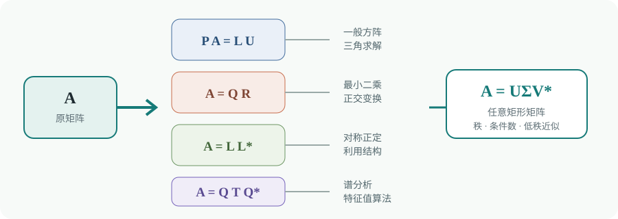

CHAPTER 1 · MATRIX FACTORIZATIONS
为什么要把矩阵分解成更简单的矩阵
分解不是改写符号，而是把难问题变成可计算的子问题。
求解 Ax=b 时，直接求逆通常不是最好的计算路径。矩阵分解把一个复杂矩阵表示为结构简单、容易求解或容易分析的因子。不同分解适用于不同结构和目标，不能互相替代。
- 理解带主元 LU、QR、Cholesky、Schur 和 SVD 的适用条件。
- 知道正交变换为何有利于误差控制。
- 能根据问题类型选择分解，而不是一律求逆。

1. LU：把一般线性系统变成两次三角求解
高斯消去通过消去主元列下面的元素，把 A 变成上三角矩阵 U；消去过程中使用的乘子组成下三角矩阵 L。实际计算通常需要行置换，因此关系写成 P A=L U，而不是无条件写 A=LU。
求解 Ax=b 时，先求 Ly=Pb，再求 Ux=y。三角系统可用前代和回代高效求解。部分选主元通过交换当前列中绝对值较大的候选主元到对角位置，避免除以过小元素；它显著改善实践稳定性，但不意味着所有矩阵都没有误差放大。
2. QR：用正交变换处理最小二乘
QR 分解把 A 写成 Q R，其中 Q 的列正交归一，R 为上三角矩阵。对满列秩 m×n 矩阵（m≥n），经济型 QR 中 Q 为 m×n，R 为 n×n。Householder 反射是稳定且常用的构造方式。
对最小二乘问题，正交变换不改变 2-范数：||Ax−b||₂=||Q*Ax−Q*b||₂。因为 Q*A=R，问题化为求解上三角系统 R x≈Q*b 的前 n 个分量，并由剩余分量得到最小残差。
3. Cholesky：利用对称正定结构
若 A 是实对称正定矩阵，存在唯一对角元素为正的下三角 L，使 A=LLᵀ。复 Hermitian 正定矩阵则写 A=LL*。Cholesky 比一般 LU 更省算术，也利用了对称结构；若矩阵不正定，分解会失败，不能强行套用。
正定性通常来自能量、协方差或严格凸二次型。算法实现仍需检查矩阵是否对称/Hermitian、数值尺度是否合理，以及舍入误差是否让理论正定矩阵在计算中接近失去正定性。
4. Schur 与 SVD：谱信息和任意矩形矩阵
Schur 分解对任意复方阵给出 A=Q T Q*，其中 Q 酉、T 上三角；实数情形的 T 通常是准上三角块结构。它比直接追求特征向量矩阵更稳健，是许多特征值算法的基础。
SVD 对任意 m×n 矩阵成立：A=UΣV*。U、V 的列向量正交，Σ 的对角线上是非负奇异值。截断 SVD 可以构造低秩近似；最小奇异值与最大奇异值之比也揭示矩阵对不同方向的伸缩差异。
5. 选择分解时先写清假设
一般稠密方阵求解：优先考虑带部分选主元的 LU。满列秩最小二乘：通常使用 Householder QR。对称正定系统：考虑 Cholesky。需要可靠秩信息、伪逆或最优低秩近似：使用 SVD。研究特征值：Schur 形式往往比直接形成特征向量矩阵更稳妥。
分解的名字并不自动保证数值正确。要检查重构残差、正交性、三角结构和输入矩阵假设；还要区分完整分解与经济型分解，以及实数和复数版本。
交互检查：哪一种分解符合当前结构？
选择矩阵结构，查看应优先考虑的分解与前提。
先确认矩阵结构，再选择分解。
参考资料
- James W. Demmel, Applied Numerical Linear Algebra, Chapter 1 §1.3.1factorization overview
- LAPACK project overviewLU, QR, Cholesky, Schur and SVD routines
本页以独立教学语言解释数学与算法；原始教材用于定位主题，不复制原书段落或插图。